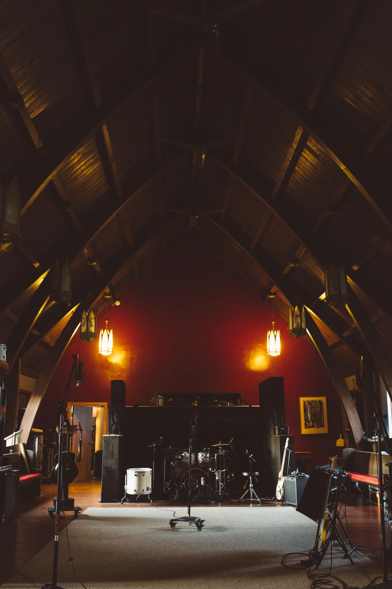
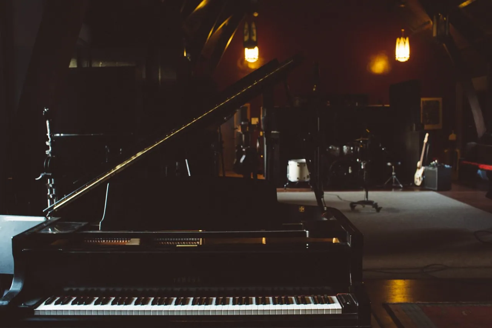

TheChurch
Pittsburgh, PA

Studio A
Live room & control room
Timber cathedral ceiling. Isolation booths. Control Room A.
- Live room
- 30 × 60 feet
- Ceiling
- 30 feet, cathedral
- Console
- API 2448 · 40 channels
Equipment
list
Search inventory 
Microphones
- 1945 RCA Model 77d Ribbon Mic
- Neumann U87
- Neumann M149
- Neumann TLM49
- Neumann U47 FET
- Royer 121
- (2) Telefunken AR-51
- (3) Telefunken M-80
- (2) Telefunken M81-sh
- (2) Telefunken M-60
- (2) Telefunken Elam 60
- (3) AKG CK451 EB w/ CK1 Capsules
- (4) Sennheiser 609 Silver
- (4) Sennheiser MD 441
- (4) Sennheiser MD 421 ii
- (2) Sennheiser MD 421 (70's)
- Shure SM 91 PZM
- (5) Shure SM 57
- Shure SM57 Granelli Right-Angle Mod
- Shure SM57 (no transformer)
- Shure SM57 Crimson Audio Transformer
- (3) Shure SM 58
- (3) Shure SM 7b
- Shure KSM 44
- (2) Electrovoice RE-20
- Yamaha SKRM 100 subkick
- (2) Shure Beta 52
- (2) Audix D6
- Audio Technica AT450 (side address)
- (2) Audio Technica AT 4047mp
- (2) Audio Technica AT4081 Ribbon
- Audio Technica AT4080 Ribbon
- Audio Technica AT 5040
- Audio Technica AT 5045
- Audio Technica At 4060 (tube)
- (2) Audio Technica ATM 350 (clip on)
- (2) Audio Technica AE3000
- Audio Technica AE2500 (duel element)
- (2) Ear Trumpet Labs Edwina Large Diaphragm Condenser
- AEA KU5A ribbon mic
Console & outboard
- API 2448 · 40-channel custom split frame
- Studer A820 MCH
- (16) Lynx Aurora
- (48) Lynx Aurora (n)
- Dunlavey SCIII
- ATC scm25A
- Focal twin 6be
- Yamaha NS-10m
- Telelefunken Cube
- Custom Spring Reverb
- EMT 140 plate reverb
- (2) BAE Neve 1073
- (6) BAE 312
- (2) BAE g10 EQ
- Millennia HV 3r
- (2) Great River 500-NV (Mercenary Edition)
- ACME Opticom
- (2) Altec 1592b
- (2) Kush Clariphonic EQ
- (2) Phoenix Audio DRS-EQ
- Summit audio TLA 100a
- Focusrite Octo pre Mk II
- BBE sonic maximizer
- NEVE 9098 Stereo mic preamp
- Klark Teknik DN 360 stereo EQ
- (2) Empirical Labs Distressor
- Universal Audio 1176
- Drawmer DL 241 compressor
- API 3124+ mic preamps
- (12) API 212l mic preamps
Drums
- Yamaha Maple Custom (early 2000's)
- 8, 10, 12, 14, 16, 22
- Drumcraft Series 8 (birch)
- 10, 12, 13, 14, 14 (snare), 16, 18 (kick)
- 14 x 6.5 Ludwig Supraphonic
- 14 x 5 Ludwig Black Beauty
- 14 x 8 Gretsch Swamp Dog (Ash)
- 14 x 5 Tama Bell Brass
- 14 x 6.5 Pearl Free Floater (Brass)
- 14 x 5 Yamaha Maple Custom Absolute Nouveau
- 15 x 6.5 Yamaha Turbo Tour (Birch)
- 14 x 3.5 Mapex Brass Master
- 14 x 6.5 Mapex Black Panther (Maple)
- 14 x 5 Slingerland (Steel)
- DW 5000 Double Chain Drive
- DW 9000 Double Chain Drive
- Ludwig Single Chain
Cymbals
- 22" Instanbul Agop Signature
- 16" Istanbul Agop Signature (used as hi-hats)
- 16" Istanbul Mehmet Crash
- 14" Istanbul Alchemy Power Hats
- 22" Zildjian K Constantinople Medium Low
- 20" Zildjian Armand Ride
- 20" Zildjian A Custom Ride
- 18 Zildjian A Custom Crash
- 17" A Medium Thin Crash
- 16" Zildjian A Custom Crash
- 14" Zildjian A Custom Hi-Hats
- 14" Zildjian K Hi-Hats
- 14" Zildjian New Beat Hats
- 10" Zildjian Oriental Splash
- 8" Zil-Bel
- 14" Zildjian Oriental Trash China
- 20" Sabian HH Classic Ride
- 19" Sabian AAXtreme China
- 18" Sabian AA Crash
- 17" Sabian Medium Thin Crash
- 16" Sabian AA Crash
- 16" Sabian AAX Stage Crash
- 14" Sabian Flat Hats
- 14" Sabian AAX Metal Hats
- 16" Wuhan China
- 12" Wu
Basses
- 2009 Fender American Jazz Bass
- 2000 Epiphone Allen Woody Short Scale Bass
- 1980 Fender Precision Bass
- 1990 Fender Precision Bass
- 1970’s Gibson Victory Bass
- Fender VI
Guitars
- 1982 Gibson Les Paul 30th Anniversary Goldtop
- 2007 Gibson Southern Jumbo
- 2002 Alvarez-Yairi DY74 Dreadnought acoustic
- 1999 Epiphone A style Mandolin
- 2012 Fender Relic Stratocaster
- 1968 Gibson Firebird III
- Fender Custom Shop Telecaster
- Fender Custom Shop Telecaster thinline
- Danelectro U2
- Danelectro 12 String
Amplifiers
- Mesa/ Boogie Lonestar Combo
- Fender Twin Reverb '63 Blackface Reissue
- Fender Vibrolux Reverb Blackface Reissue
- Fender Quad Reverb Silverface
- Fender Blues Jr Tweed
- Fender Deluxe Reverb
- Schroeder SA9+
- 70’s Ampeg VST
- Gibson Goldtone GA-15 RV
- Vox Brian May Model
- Mesa/Boogie Walkabout Scout
- Roland JC-120 Jazz Chorus
- 1959 Danelectro Pioneer 25
- 1960 Audio Guild Titano
- Vox AC30
- Audio Guild Panaramic
- Royal Freshmen
- 1964 Harmony H400
- '66 Ampeg Gemini II
- '67 Ampeg B-18n
- Baldwin Exterminator
- Marshall 30th Anniversary 6100 lm & 4x12 Cab
- 10" Danelectro Dirty Sweet
- Rivera Rake & matching 2x12
- 70's Fender Bassman Head
- 90's Ampeg 8x10
- QSC KW 153 Sub (2)
- QSC KW181 Main (2)
Keys & synths
- Yamaha C7 concert Grand Piano
- 1968 Wurlitzer Model 200 with warneck research mods
- 1976 Fender RHODES Mark 1 Suitcase Piano
- 1936 Hammond Modal A Organ w/ Leslie 122 Speaker
- 1979 Hohner Clavinet D6 with vintage vibe upgrades
- Hammond B3 with Leslie 122 Speaker
- Hammond C3 with Leslie 122 Speaker
- Leslie 130 with Vintage Speak Easy preamp and speed control
- Hammond D145 theater organ
- Hammond PR 40 tone cabinet
- Hammond C 20 tone cabinet
- Yamaha MOTIF ES-8
- Roland SH-101 monophonic analog synthesizer
- Whitman Upright Tack piano
- Novation Impulse 61
- Native Instruments S61 n controller
- Trek II pedal for leslie
Confirm equipment availability for your session.
Video
Video services
Green screen available

Charles Wesley Godwin & The Allegheny High
“The Jealous Kind” · Live From The Church
Video: Louie Nice / Artist’s official channel.
YouTube connects only when you press play.
People


Contact
412 818 1307info@Pittsburgh, PA 15210 (opens Google Maps in a new tab)
Project inquiry
Inquiry prepared.
Open it in your email app, or copy the message and email it to info@thechurchrecordingstudio.com.
Your inquiry has not been sent. Send it from your email app to reach the studio.